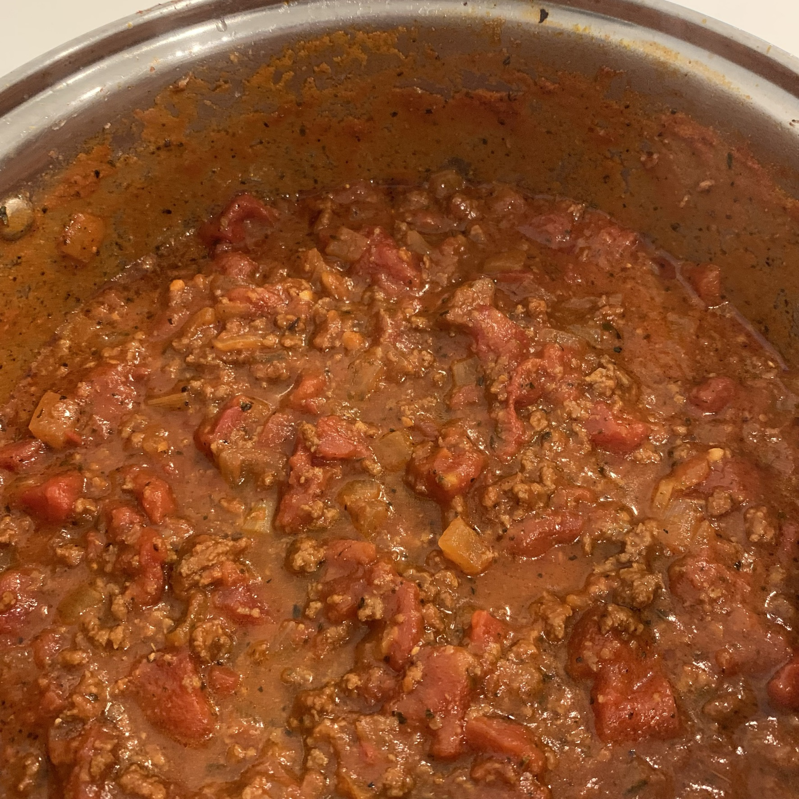

MOM'S SPAGHETTI SAUCE
Spaghetti Sauce Ingredients
INGREDIENTS
- 1 Tbsp olive oil
- 1/2 white onion, chopped
- 2 cloves garlic, minced
- 1-1 1/2 lbs ground beef (adjust amount based on meat preferences)
- 1 (6 oz) can tomato paste
- 3 (14 oz) cans diced or crushed tomatoes (diced for a chunkier sauce or crushed for a smoother sauce)
- 1 1/2 Tbsp brown sugar
- 2 tsp oregano
- 1 tsp dried basil
- 1/2 tsp dried thyme
- 1 tsp salt
- 1 bay leaf
- 2 cups water
- 1/4 tsp freshly ground pepper
DIRECTIONS
- Heat a large pot over medium heat and add olive oil. Add the ground beef and cook until browned.
- Add onion and garlic. Cook until onion begins to soften.
- Add the tomato paste and stir. Let cook for a few minutes. Do not let the tomato burn.
- Stir in the diced or crushed tomatoes, brown sugar, oregano, dried basil, dried thyme, salt, bay leaf, and water.
- Bring the sauce to a low boil. Then reduce the heat to medium-low to allow for the sauce to simmer uncovered for approximately 2-3 hours.
- Add the black pepper and serve over spaghetti noodles.